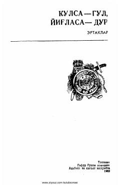

KGAbdugʻofur Shukurov aytgan boy va mazmunli oʻzbek xalq ertaklari toʻplami.
Ushbu kitobda ertakchi Abdugʻofur Shukurov repertuaridan yozib olingan oʻzbek xalq ertaklari jamlangan. Toʻplam Oʻzbekiston SSR Fanlar akademiyasi Til va adabiyot instituti mutaxassislari tomonidan nashrga tayyorlangan. Kitobdan xalqimizning boy fantaziyasi hamda maʼnaviy qadriyatlarini aks ettiruvchi sehrli va hayotiy ertaklar oʻrin olgan.